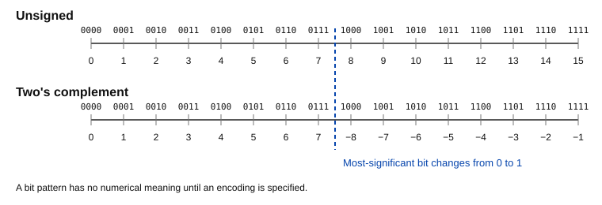
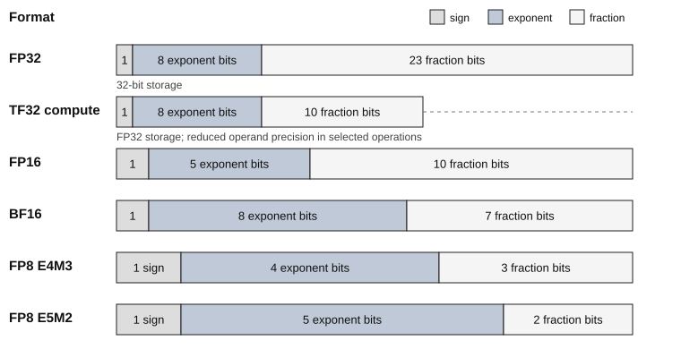
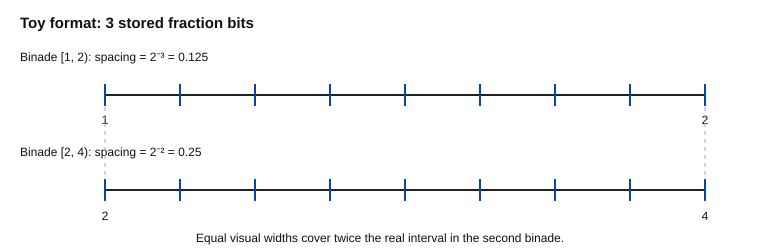
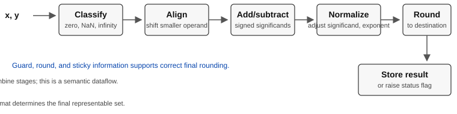

2026-08-27 · Numerical Computing, Machine Learning, Quantization
When we say that a model is "in FP16" or that a tensor is "INT8", we compress several decisions into one label. Which bit patterns represent values? Which real numbers are missing? How are intermediate results computed? In what format are sums accumulated? What happens when a result lies between two representable numbers?
Those questions are not implementation trivia. They determine whether a training run overflows, whether adding a small gradient changes a parameter, how much memory a model occupies, and what information is lost before a quantization algorithm even begins.
This article develops the common numerical data types used in machine learning from their bits. We will derive their ranges, encode and decode values by hand, examine how arithmetic is rounded, and establish useful error bounds. Statements about mathematical formats are based on IEEE 754-2019 1; statements about particular accelerator behavior are identified separately because a storage format alone does not determine a complete computation.
A numerical data type defines at least two things:
In machine-learning systems, it is helpful to separate three roles that are often hidden behind one dtype label:
For example, a matrix multiplication can read BF16 operands, multiply them at BF16 precision, accumulate products in FP32, and finally store a BF16 output. Google describes this BF16-multiply/FP32-accumulate pattern for its TPUs 4, while PyTorch documents several backend-dependent choices for reduced-precision matrix multiplication 7. Therefore, "BF16 matrix multiplication" is not a complete numerical specification by itself.
This distinction will become essential in Part 2. A four-bit weight may occupy four bits in a checkpoint but be unpacked and dequantized before arithmetic. Storage compression and low-precision computation are related, but they are not identical.
For an n-bit unsigned integer with bits b_{n-1}\ldots b_1b_0, positional notation gives
The smallest value is obtained when every bit is zero. The largest is obtained when every bit is one:
The equality follows from the finite geometric-series formula. Thus an unsigned n-bit integer represents exactly the integers in
UINT8, for example, represents the 256 integers from 0 through 255. It does not represent 12.5, and it does not approximate it automatically; an application must supply a scale or a conversion rule.
Most contemporary systems encode signed integers using two's complement. Its value equation is
The most significant bit has negative weight. Setting only that bit gives -2^{n-1}; clearing it and setting all remaining bits gives 2^{n-1}-1. Therefore
For INT8 the range is [-128,127]. Decode the bit pattern 11110110 directly:
The familiar "invert the bits and add one" procedure gives the magnitude of a negative two's-complement number, but the weighted sum above is the definition and works without a special case.
Integer addition and multiplication are exact only when the mathematical result remains in range. At the machine-instruction level, fixed-width arithmetic may wrap modulo 2^n; numerical libraries may instead widen the accumulator or detect overflow. Quantizers usually clip before storing. These are different policies, so one should never infer overflow behavior solely from the word INT8.
A signed four-bit two's-complement value has range [-8,7]. General-purpose machines do not usually address individual four-bit words. Libraries commonly pack two INT4 values into one byte, then unpack or decode them in a kernel. Consequently, a nominal four-bit tensor also needs layout information: nibble order, signedness, grouping, scales, and sometimes zero-points.

An integer code can stand for a real value when accompanied by a scale s and, optionally, a zero-point z:
Here q is the stored integer and \hat{x} is the represented real value. With s=0.25, z=0, and q=27, the represented value is 6.75. Adjacent integer codes are always separated by 0.25, so this is a uniform grid.
Traditional fixed-point notation fixes the binary point by convention. For instance, a format with four fractional bits represents q/16. The scale-and-zero-point expression is more general and is exactly the form we will use for affine integer quantization in Part 2.
Notice what the dtype cannot tell us here. INT8 provides the code range, but not the real-value range. If s=0.25 and z=0, the INT8 codes represent values from -32 to 31.75. If s=0.01, the same bits cover only [-1.28,1.27] with finer spacing. Range and resolution trade against each other.
Fixed point uses a constant spacing. Floating point uses an exponent to make the spacing grow with magnitude. A binary floating-point encoding divides its bits into:
The precision is p=t+1 significant binary digits for normal numbers because the leading digit is implicit.

For the IEEE binary interchange formats, when 0<E<2^w-1, the represented value is
where the exponent bias is usually
The leading 1 is not stored. A normal binary value always has the form 1.f_1f_2\ldots f_t \times 2^e, so recovering that predictable bit increases precision without increasing storage.
The all-zero exponent field is reserved. If E=0 and F=0, the value is signed zero. If E=0 and F\neq0, the hidden leading digit becomes zero:
These are subnormal numbers. They fill the gap between zero and the smallest normal number with constant spacing, providing gradual underflow rather than an abrupt jump to zero. Implementations or performance modes can nevertheless flush subnormals to zero; that behavior must be documented separately from the abstract format.
For IEEE binary formats, an all-one exponent with a zero fraction represents signed infinity; an all-one exponent with a nonzero fraction represents NaN, or "not a number." NaNs allow invalid results such as 0/0 to propagate without being confused with an ordinary finite number.
Not every low-precision ML format copies these special-value rules. The proposed FP8 E4M3 encoding extends its finite range by omitting infinities and reserving fewer patterns for NaNs, whereas E5M2 follows the IEEE convention more closely 5. "FP8" is therefore a family name, not a unique encoding.
Let us encode 13.25 in IEEE binary16, commonly called FP16.
First convert the integer and fractional parts:
Normalize it:
Binary16 has five exponent bits, ten stored fraction bits, and bias B=15.
The complete bit string is
sign exponent fraction
0 10010 1010100000
Grouping into hexadecimal digits gives 0x4AA0. Decoding the fields returns
This value is exact because its fractional part is a power-of-two fraction. Decimal 0.1 behaves differently.
A rational number has a terminating base-two expansion only if its reduced denominator divides some power of two. Since
and no power of two contains the factor 5, 0.1 cannot terminate in binary. Its expansion repeats:
FP32 stores the nearest representable value under the usual round-to-nearest rule. Its bits are 0x3DCCCCCD, whose exact decimal value is approximately 0.10000000149011612. The datatype did not calculate the wrong real number; it selected the nearest member of a finite representable set.
Consider normal positive numbers with the same unbiased exponent e. Consecutive fraction codes differ by one, so consecutive values differ by
The interval [2^e,2^{e+1}) is called a binade. Spacing is constant inside a binade and doubles when the exponent increases by one. Floating point therefore supplies approximately constant relative precision, not constant absolute precision.

numpy.finfo(dtype).eps-style machine epsilon is usually the distance from 1 to the next larger value:
Numerical error analysis often uses the unit roundoff, half that distance for round-to-nearest:
These two quantities are sometimes both called "machine epsilon," so a careful article or API should state which convention it uses.
Suppose x is a normal real number in [2^e,2^{e+1}), the rounded result is normal, and no overflow or underflow occurs. Adjacent floats in this binade are 2^{e-t} apart. Rounding to the nearest one introduces at most half that distance:
Because |x|\geq2^e,
Equivalently,
This compact model is powerful, but its conditions matter. It is not a universal relative bound near zero, under overflow, or for arbitrary non-IEEE approximations. Goldberg gives a detailed treatment of ulps, relative error, guard digits, and exact rounding 2.
IEEE 754 defines several rounding-direction attributes. The common default is round to nearest with ties resolved toward the result whose least significant digit is even 1. "Even" makes repeated halfway cases statistically less biased than always rounding upward.
Imagine a toy format with precision p=4. Near one, its values include
1.000₂ = 1.000₁₀
1.001₂ = 1.125₁₀
The exact number 1.0625=1.0001_2 lies halfway. The lower candidate has an even least-significant stored bit, so ties-to-even selects 1.000_2.
An operation conceptually computes the exact real result and then rounds it to the destination format. Hardware obtains that result efficiently using extra guard, round, and sticky information rather than an infinitely wide register 2.
To add two finite floating-point values:
For an exact example,
After alignment,
With enough fraction bits this sum is exact. With fewer bits the final significand must be rounded.
Alignment also explains absorption. If the exponents differ by more bits than the available precision, the smaller addend can be shifted entirely beyond the retained significand. Then a+b may round to a even when b\neq0.
Subtraction has an additional danger: if two approximate inputs are close, leading digits cancel and expose their earlier representation errors. This is catastrophic cancellation. Subtraction itself can still be correctly rounded; the problem is that the exact answer contains much less information than the operands appeared to contain.
For normal finite values written as
their exact product is
The hardware XORs the sign bits, adds exponents after accounting for biases, multiplies significands, normalizes, and rounds. The unrounded significand product can need roughly twice the operand precision, which is one reason intermediate precision matters.
A fused multiply-add computes
with one final rounding, instead of rounding ab first and then rounding the sum. The two expressions can produce different answers.
A dot product contains many multiply-adds:
If every term were accumulated in a low-precision format, rounding would be introduced repeatedly. Using a wider accumulator usually reduces this error and extends the range of partial sums. This is why operand precision and accumulator precision must be reported separately in ML benchmarks.
Under the standard rounding model and assuming nu<1, error analyses of sequential inner products use the abbreviation
For a fused multiply-add sequence there is one rounding per term, leading to a \gamma_n-type bound. Separate rounded multiplications and additions require a correspondingly larger operation count, often expressed with \gamma_{2n} in a simple analysis. The bounds grow approximately linearly with the operation count when that count times u is small. They are worst-case statements, not predictions that every dot product loses that much accuracy; cancellation, data distribution, summation order, fused operations, and accumulator width all affect the observed result. Higham develops this notation and the inner-product bounds rigorously 10.

The following table compares formats by their mathematical fields. The maximum finite and minimum normal values are properties of the stated encodings; actual libraries may restrict operations or use different handling for subnormals.
| Format | Sign / exponent / trailing bits | Precision p | Approx. maximum finite | Approx. minimum positive normal | Unit roundoff u |
|---|---|---|---|---|---|
| FP64 | 1 / 11 / 52 | 53 | 1.80\times10^{308} | 2.23\times10^{-308} | 2^{-53} |
| FP32 | 1 / 8 / 23 | 24 | 3.40\times10^{38} | 1.18\times10^{-38} | 2^{-24} |
| TF32 compute | 1 / 8 / 10 | 11 | FP32-like range | FP32-like range | 2^{-11} |
| FP16 | 1 / 5 / 10 | 11 | 65504 | 6.10\times10^{-5} | 2^{-11} |
| BF16 | 1 / 8 / 7 | 8 | 3.39\times10^{38} | 1.18\times10^{-38} | 2^{-8} |
| FP8 E4M3 | 1 / 4 / 3 | 4 | 448 | 2^{-6} | 2^{-4} |
| FP8 E5M2 | 1 / 5 / 2 | 3 | 57344 | 2^{-14} | 2^{-3} |
FP64 spends 64 bits to provide a 53-bit significand and a much larger exponent range. It is essential in many scientific-computing problems, but doubling the bytes relative to FP32 increases storage and bandwidth requirements.
FP32 is the traditional baseline for neural-network training and general GPU numerical work. Its 24-bit precision gives roughly seven reliable decimal digits for a single rounded value, although an algorithm can lose more through conditioning or accumulated error.
FP16 and BF16 both occupy 16 bits, but allocate them differently:
This is a clean example of the range-precision trade-off. The BF16 design and its deep-learning results are studied in Kalamkar et al. 3. Neither format is universally "more accurate": FP16 resolves nearby values more finely when they are in range; BF16 is much less likely to overflow or underflow at FP16's limits.
NVIDIA's TensorFloat-32 uses an eight-bit exponent and ten explicitly represented fraction bits for selected tensor-core computations 6. Inputs and outputs are ordinarily held in FP32 storage. Calling TF32 a 19-bit tensor storage dtype is therefore misleading; it is better understood as reduced significand precision in a compute path with FP32-like exponent range.
Because backend settings can enable or disable TF32, two programs with FP32 tensors can execute matrix multiplications at different effective operand precision. Reproducible numerical work must record backend configuration as well as tensor dtypes.
E4M3 spends more bits on the significand and is more precise locally. E5M2 spends more bits on the exponent and covers a much larger range. The joint NVIDIA, Arm, and Intel proposal reports E4M3 finite values up to 448 and E5M2 values up to 57344, with different special-value semantics 5.
At only three or four significant bits, unscaled conversion to FP8 can be severe. Practical systems use scaling recipes, higher-precision accumulation, and format selection by tensor role. Those policies are part of a quantization or mixed-precision system, not consequences of the eight-bit encoding alone.
FP4 E2M1 is a tiny floating-point encoding with one sign, two exponent, and one trailing significand bit. NVIDIA's documented FP4 quantization scheme has finite values up to magnitude 6 and combines the codes with per-block scales 8.
NF4, introduced with QLoRA, instead uses a 16-value codebook chosen for approximately normally distributed weights 9. It is non-uniform: code points are not equally spaced, and its four bits are an index into a table rather than a sign/exponent/fraction decomposition. Both use four bits per code, but their mathematics and intended use differ.
For quick reference:
| Integer format | Exact code range | Adjacent code spacing | Real-value meaning |
|---|---|---|---|
| UINT8 | [0,255] | 1 | Requires scale/zero-point for quantized real tensors |
| INT8 | [-128,127] | 1 | Requires scale/zero-point for quantized real tensors |
| INT4 | [-8,7] | 1 | Usually packed; requires grouping and scale metadata |
Integer grids have uniform spacing before scaling. Floating-point grids concentrate codes near zero and spread them out as magnitude grows. NF4 supplies a learned-by-design, distribution-aware codebook. Part 2 will compare these choices as quantizers rather than merely as bit layouts.
The companion script experiments/numerical-dtypes/numerical_dtypes.py uses only Python's standard library. Run it from the repository root:
python3 experiments/numerical-dtypes/numerical_dtypes.py
Python's struct module can round a value to IEEE binary32 storage and expose its bits:
import struct
encoded = struct.pack(">f", 0.1)
bits = struct.unpack(">I", encoded)[0]
decoded = struct.unpack(">f", encoded)[0]
print(f"0x{bits:08X}")
print(f"{decoded:.17g}")
Expected output:
0x3DCCCCCD
0.10000000149011612
This is a representation result derived from the FP32 format, not an empirical claim about a particular neural network.
Using binary64 values,
a = 1e16
b = -1e16
c = 1.0
print((a + b) + c)
print(a + (b + c))
The first expression produces 1.0; the second commonly produces 0.0. In the second parenthesization, adding 1.0 to -1e16 is too small to change the stored value before a is added. Real addition is associative; rounded floating-point addition is not.
The script compares an explicit left-to-right accumulation loop with math.fsum, which tracks partial sums more carefully. For [1e16, 1.0, -1e16], the naive loop returns 0.0, while math.fsum returns the exact result 1.0. A more accurate algorithm can improve a result without changing the storage dtype. "Use more bits" is only one tool; stable formulations and accumulation strategies matter too.
These small experiments should not be generalized into performance claims. They isolate format behavior and numerical order, which is precisely what makes them reproducible across a broad range of systems.
Choosing a dtype is a constrained numerical-design problem. Ask, in order:
The last question is indispensable. A dtype can satisfy a local error bound while the full algorithm remains inaccurate because the problem is ill-conditioned. Conversely, a neural network can tolerate surprisingly coarse local representations because its learned computation is robust to them. Bit counts alone prove neither outcome.
We now have the pieces needed to analyze quantization without hand-waving:
Part 2 will use these facts to derive affine quantization, clipping and rounding error, per-tensor versus groupwise scales, and the logic behind methods such as LLM.int8(), SmoothQuant, GPTQ, AWQ, and NF4/QLoRA.
Cited as:
Le Hoang Viet. "Bits, Range, and Precision: How Numerical Data Types Actually Work". Le Hoang Viet's Homepage, August 2026. https://mikyx-1.github.io/blog/numerical-dtypes.html
Or the BibTeX entry:
@misc{le2026numericaldtypes,
title = {Bits, Range, and Precision: How Numerical Data Types Actually Work},
author = {Le, Hoang Viet},
journal = {Le Hoang Viet's Homepage},
year = {2026},
month = {August},
url = {https://mikyx-1.github.io/blog/numerical-dtypes.html}
}← Back to the blog index. Send feedback by email.